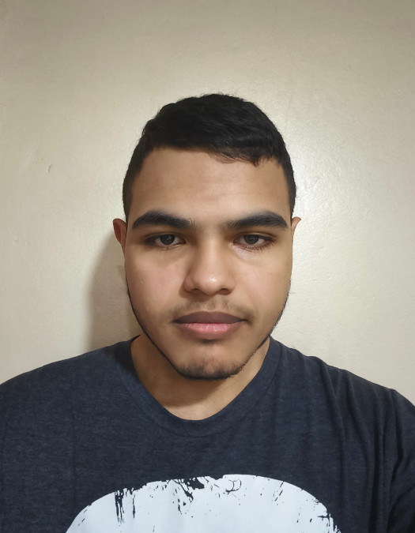
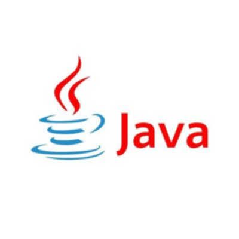
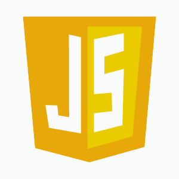
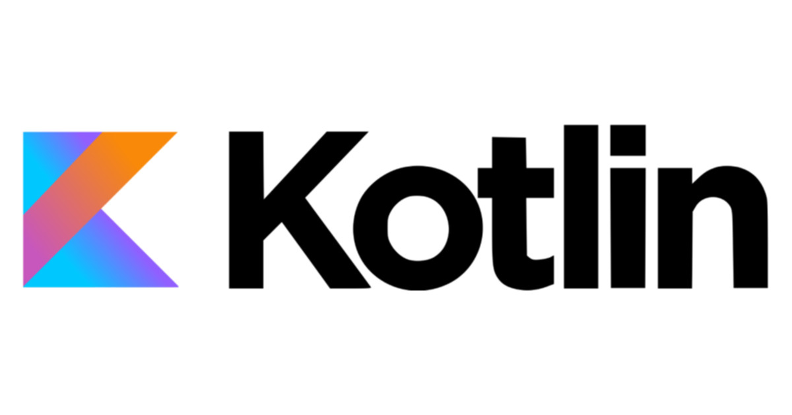
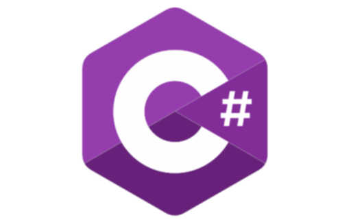
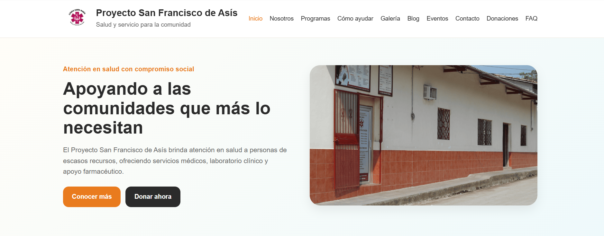
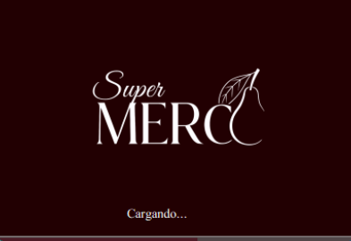

Sobre Mi

Soy Axel Sanchez estudiante de la Carrera de Ingenieria en Ciencias de la Computacion en la Universidad Catolica de Honduras con interes en el area de redes y civerseguridad. Tengo experiecia con varios lenguaajes de programacion como son C#, Java, JavasCript, Kotlin. Participe en el desarrollo de un sistema para un supermercado y el sitio web de una clinica. Quiero desarrollarme mas en el area de redes ya que me a llamado el interes desde que hice uso de esos conocmietnos en mi practicaa y tambien en civerseguridad que aunque no sepa mucho del area me llama la atencion
Habilidades




Proyectos

Tuve la oportunidad de trabajar en el desarrollo de el Sitio Web para una Clinica Local sin fines de Lucro la cual no tenia medios de difucion propios para darce a conocer y poder conseguir apoyo de su comunidad e interaactuar mas con ella

Trabaje en el desarrollo de el Sitema de un Supermercado el cual no tenia ningun tipo de sistema con el que llevar un registro todos los procesos que la rodeaban como es la compra de los productos a los proveedores, las venta diarias, gerenecia, etc.